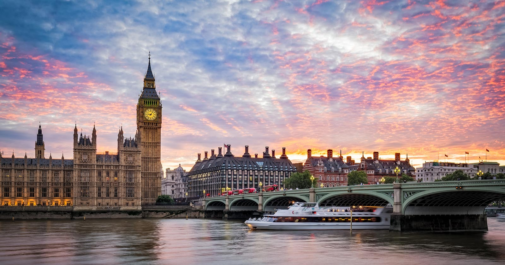
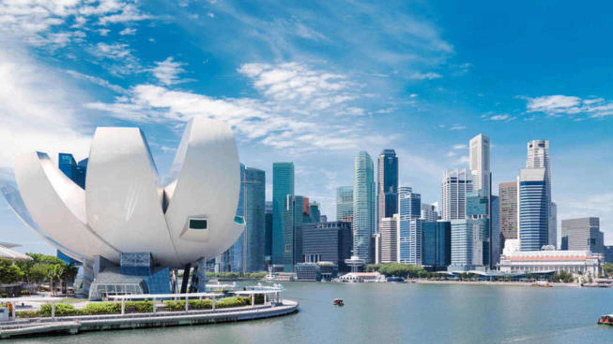

Liderando el ranking se encuentra esta isla que ha sabido implantar algunas medidas tan punteras como:
soluciones inteligentes de control de tráfico cuenta con un sistema que permite ahorrar hasta 60 horas al año
a los conductores, taxis autónomos (sin conductor) y videovigilancia inteligente.
La capital británica, única ciudad europea presente en este top 5, ha dotado a todas las calles del barrio de
Westminster de sensores de peso que, a través de una app, alertan a los usuarios sobre la disponibilidad de plazas
de aparcamiento.
El epicentro de la economía mundial ha instalado sensores en semáforos y autobuses para descongestionar la
circulación en la Gran Manzana.
La movilidad es el mayor problema de la ciudad del Golden Gate. Para reducir el tráfico y la polución han apostado fuertemente
por el transporte eléctrico autónomo y por una flota de vehículos públicos.
Más de 500 sensores han convertido a esta metrópoli en una región inteligente: sus semáforos, alumbrado público y contenedores de basura están todos conectados a internet.
Todas estas ciudades son un ejemplo de reinvención, pero en paralelo han ido surgiendo nuevas metrópolis 100% inteligentes. Tal es el caso de Másdar (Dubái), una ecociudad totalmente sostenible y sin coches; Dongtan, situada en las proximidades de Shanghái y donde solo se usarán energías renovables y se reciclarán casi la totalidad de los residuos generados; o Apern que, a solo 14 kilómetros de Viena, incluirá sistemas de movilidad y edificios sostenibles, utilización eficiente de recursos energéticos renovables y agricultura urbana.
